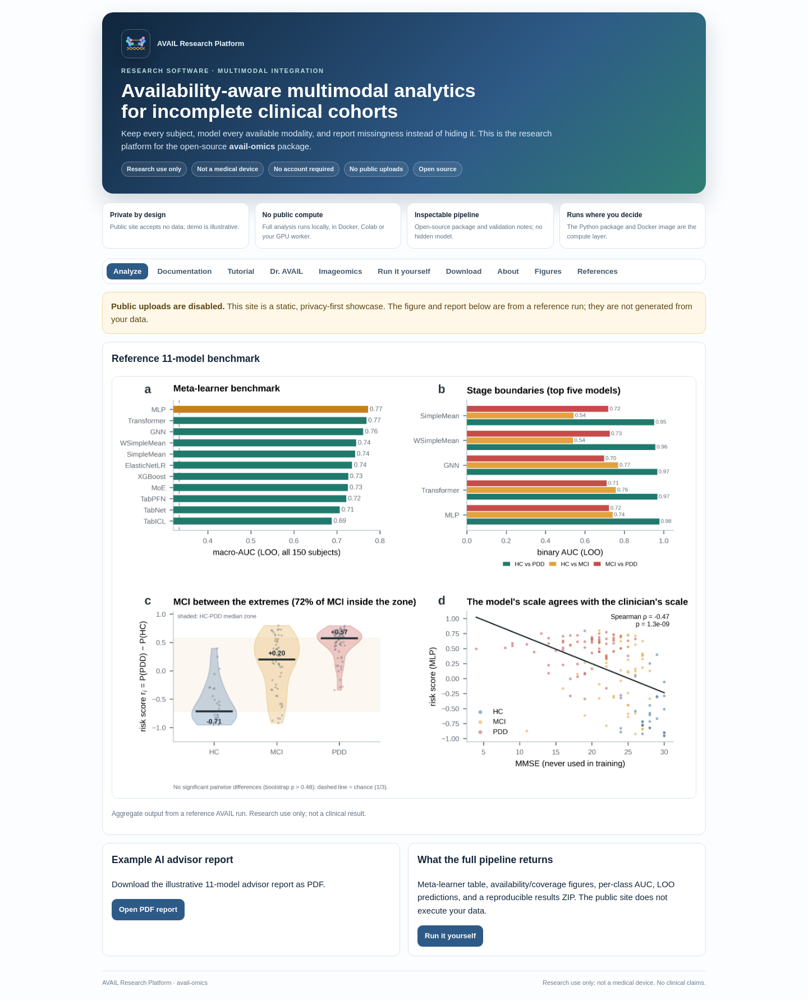
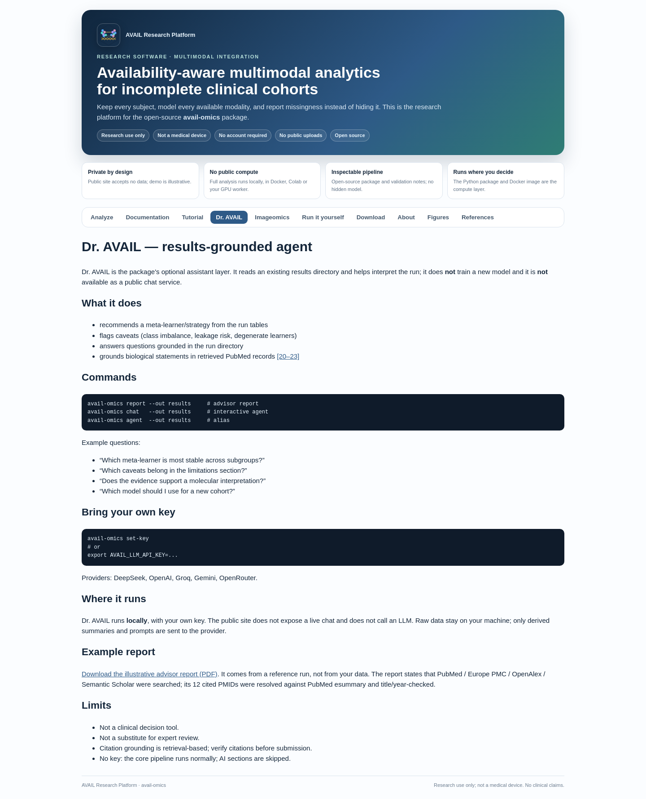
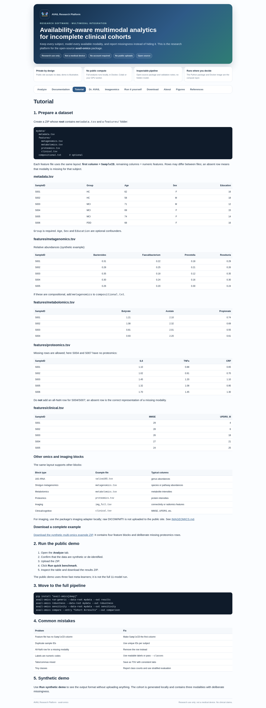

Reviewer demo
The reviewer entry point for the analysis workspace, the live Dr. AVAIL chat agent, and the Imageomics view. The live agent is invite-only; the workspace is password-protected.
Fixed demoNo uploadsResearch use onlyNot a medical deviceReviewer access: credentials are provided through the authorized reviewer channel. This entry page does not accept uploads or run models; the live agent and workspace open from the buttons below.
Starts the fixed CPU demo directly on the free-cloud instance; it may take 30–60 s to wake.

Analyze
Fixed reference benchmark, example report and the full-pipeline output description.

Dr. AVAIL agent
Results-grounded chat: model selection, interpretation, biomarker context and literature-aware discussion.

Imageomics
Imaging context and the rs-fMRI/T1 processing path; real analysis runs on your own compute.

Run it yourself
Local package, Docker, Colab and bring-your-own-compute instructions.
Dr. AVAIL — illustrative interaction
Reviewer: How should I read the availability-aware vs complete-case comparison?
Dr. AVAIL: Treat it as a coverage and stability result, not a claim of universal AUC superiority. The binary cross-cohort figure is the main comparison; the 3-class analysis is supplementary, and the imaging-only cohort is a failure audit.
Reviewer: What should I check before reusing the framework?
Dr. AVAIL: Check fold-internal preprocessing, the availability-flag contract, the exact endpoint definition, and the factorial-grid status. The package and documentation provide the reproducible commands and source tables.